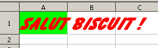
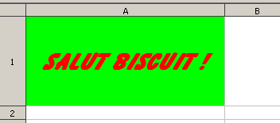
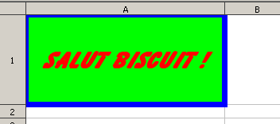

Génération de documents OpenOffice 2.0 (Spreadsheet)
Ou comment marier PHP avec la spécification OASIS d'OpenOffice
Exemples B
Les styles
Okay, alors admettons que t'es au clair avec les bases (sinon, rendez-vous ici). On va maintenant voir ce qu'on peut faire de simple avec une cellule.
<?php
// 1.
require_once ('calc/classes/OpenOfficeSpreadsheet.class.php');
$calc = new OpenOfficeSpreadsheet('exemple_b.ods');
$feuille = $calc->addSheet('Une feuille');
$cell = $feuille->getCell(1, 1);
// 2.
$cell->setContent('Salut biscuit !');
$cell->setColor('#FF0000');
$cell->setBackgroundColor('#00FF00');
$cell->setFontWeight('bold');
$cell->setFontStyle('italic');
$cell->setFontSize('24pt');
$cell->setFontFamily('Balloon');
// 3.
$calc->output();
?>

En 1, on instancie l'objet de classe, on créé une feuille et on chope une cellule (A1, en l'occurence). Ensuite, en 2, on lui set du texte, une couleur de texte et de fond, on le met en gras, italique, avec une police Balloon de 24 points.
Puis en 3, on envoie le fichier en téléchargement.
Dimensions
On constate que le texte dépasse de la cellule. A priori, ce n'est pas possible de déterminer la largeur de la cellule automatiquement. En tout cas, j'ai pas trouvé comment. Donc il faut lui spécifier soi-même une largeur, et une hauteur, pourquoi pas ?
<?php
// 1.
require_once ('calc/classes/OpenOfficeSpreadsheet.class.php');
$calc = new OpenOfficeSpreadsheet('exemple_b.ods');
$feuille = $calc->addSheet('Une feuille');
$cell = $feuille->getCell(1, 1);
// 2.
$cell->setContent('Salut biscuit !');
$cell->setColor('#FF0000');
$cell->setBackgroundColor('#00FF00');
$cell->setFontWeight('bold');
$cell->setFontStyle('italic');
$cell->setFontSize('24pt');
$cell->setFontFamily('Balloon');
// 3.
$cell->setWidth('4cm');
$cell->setHeight('3cm');
// 4.
$cell->setTextAlign('center');
$cell->setVerticalAlign('middle');
// 5.
$calc->output();
?>

On fait la même chose qu'avant, sauf qu'on rajoute une largeur et une hauteur de cellule. On en profite pour centrer le texte horizontalement et verticalement.
Une chose très importante ! Lorsqu'on set une Height pour une cellule, elle sera settée pour toutes les cellules de la ligne (ce qui est normal, c'est juste histoire de le rappeler). Pareil pour la Width. C'est toute la colonne qui subira la nouvelle largeur, et non pas juste la cellule.
Mais je le répète, c'est tout à fait normal
Les bordures
Pour les bordures, c'est pareil que pour le CSS, pour ceux qui connaissent. Sauf que la spécification précise des épaisseurs en centimètre... L'épaisseur normale correspond à 0.02cm.
<?php
// 1.
require_once ('calc/classes/OpenOfficeSpreadsheet.class.php');
$calc = new OpenOfficeSpreadsheet('exemple_b.ods');
$feuille = $calc->addSheet('Une feuille');
$cell = $feuille->getCell(1, 1);
// 2.
$cell->setContent('Salut biscuit !');
$cell->setColor('#FF0000');
$cell->setBackgroundColor('#00FF00');
$cell->setFontWeight('bold');
$cell->setFontStyle('italic');
$cell->setFontSize('24pt');
$cell->setFontFamily('Balloon');
$cell->setWidth('7cm');
$cell->setHeight('3cm');
$cell->setTextAlign('center');
$cell->setVerticalAlign('middle');
// 3. grosse bordure pour bien la voir
$cell->setBorder('0.2cm solid #0000FF');
// 4.
$calc->output();
?>

La classe propose différents moyens de s'occuper des bordures. Il y a setBorder, mais il y en a d'autres.
<?php
$cell->setBorder('0.2cm solid #0000FF');
// Equivalent :
$cell->setBorderTop('0.2cm solid #0000FF');
$cell->setBorderRight('0.2cm solid #0000FF');
$cell->setBorderBottom('0.2cm solid #0000FF');
$cell->setBorderLeft('0.2cm solid #0000FF');
// On peut aussi les spécifier par pair
// top-bottom et right-left :
$cell->setBorder('0.2cm solid #0000FF', '0.2cm solid #0000FF');
?>
Dernières mise-à-jour
La dernière mise à jour date du 7 mai 2006. La génération de feuilles de calcul est plutôt stable.
Par TafelExemple A
Les bases. Comment créer une feuille et gérer basiquement les cellules.
Par TafelExemple B
Les actions sur les cellules. Entre contenu et couleur de fond, on trouve tout c'qu'on veut!
Par TafelAstuces
Deux ou trois bidouilles marrantes pour s'économiser du code et/ou de la prise de tête.
Par TafelOpenOffice Generation PHP
Le 7 mai 2006, Tafel. Optimisé pour Mozilla Firefox